제품 정보 · HK LASER
파이버 레이저 절단기
강판에서 부품을 잘라내는 평면 가공기와, 원형관·각관에 구멍과 윤곽을 가공하는 파이프 전용기를 취급합니다. 원재료의 형상과 크기에 맞춰 절단기, 소재 교환 테이블, 자동 분류를 조합합니다.
HK LASER의 절단기
가공할 재료의 형상을 선택하고 사진과 사양을 비교해 보십시오.
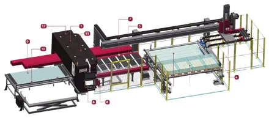
투입·절단·분류
S-Matic K315
판재 투입, 레이저 절단, 부품 분류, 잔재 회수를 하나의 라인에서 수행합니다.
- 가공 크기
- 3,000 × 1,500 mm
- 특징
- 투입부터 분류까지 전자동
- 제품 크기
- 15,593 × 6,158 × 3,679 mm

인출식 경사 테이블
KUBE 1212 FIBER
소형 판재 가공에 적합한 정사각형 테이블을 갖추고 있으며, 전면에서 소재를 넣고 뺄 수 있습니다.
- 가공 크기
- 1,240 × 1,240 mm
- 특징
- 인출식 경사 테이블
- 제품 크기
- 4,010 × 2,210 × 2,180 mm

1·2테이블 사양
FL 2512 FIBER
수동으로 꺼내는 1테이블 사양과 승강식 셔틀을 사용하는 2테이블 사양 중에서 선택할 수 있습니다.
- 가공 크기
- 1,240 × 2,490 mm
- 특징
- 1테이블·2테이블 선택
- 제품 크기
- 4,800 × 2,320 × 2,680 mm

사이드 로딩
FL 3015 FIBER
큰 측면 도어로 정척 판재를 넣고 빼는 레이저 절단기입니다.
- 가공 크기
- 3,048 × 1,524 mm
- 특징
- 측면 도어로 소재 반입
- 제품 크기
- 4,908 × 9,290 mm

전면·측면에서 작업
RS3015 FIBER
전면과 측면 도어로 가공실 안의 워크에 손이 닿습니다.
- 가공 크기
- 3,048 × 1,524 mm
- 특징
- 2.5 G 고속 모션
- 제품 크기
- 2,270 × 11,250 mm
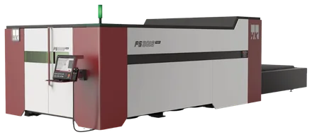
장척 판재·양문형 도어
FS Series
판재 길이에 맞춰 가공 범위를 선택하는 시리즈입니다. 사진은 FS3015 FIBER입니다.
- 가공 크기
- 3,048 × 1,524 – 8,250 × 2,540 mm
- 특징
- 테이블 크기 6기종
- 제품 크기
- 3,300 × 11,218 mm (FS3015)

대형 강판용 갠트리
FO Series
대형 강판 위를 갠트리가 이동하는 개방형 절단기입니다. 사진은 FO12025 FIBER입니다.
- 가공 크기
- 12,192 × 2,540 – 30,480 × 3,048 mm
- 특징
- 대형 강판·베벨 가공 대응
- 제품 크기
- 6,200 × 21,000 mm (FO12025)

소재 감지·수평 셔틀
HD Series
소재 자동 감지와 수평 셔틀 테이블을 갖춘 판재용 레이저 절단기입니다. 게재 기종은 HD3015입니다.
- 가공 크기
- 3,048 × 1,524 – 12,000 × 4,000 mm
- 특징
- 수평 셔틀 테이블
- 제품 크기
- 2,850 × 8,604 mm (HD3015)

품질 중시·가격을 낮춘 주력기
FC3015 FIBER
절단 품질을 최우선으로 하면서 가격을 크게 낮춘 3015 클래스 절단기입니다. 승강식 셔틀 테이블로 소재를 교환합니다.
- 가공 크기
- 3,048 × 1,524 mm
- 특징
- 품질 중시·가격을 낮춘 주력기
- 제품 크기
- 3,283 × 10,632 mm
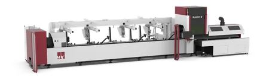
원형관 Ø12–273 mm
TL6527-S
원형관·각관을 가공하는 파이프용 레이저 절단기입니다. 일본 사양 6 kW는 외경 12~273 mm의 원형관에 대응합니다.
- 가공 크기
- Ø12–273 mm × 6,500 mm
- 특징
- 디지털 척으로 고속 가공
- 제품 크기
- 12,500 × 4,700 × 2,600 mm

원형관 Ø40–360 mm
TL9036-X
대구경·장척 파이프에 대응하는 레이저 절단기입니다. 원형관은 외경 360 mm까지, 각관은 250 mm 각까지 가공할 수 있습니다.
- 가공 크기
- Ø40–360 mm × 9,000 mm
- 특징
- 3D 베벨·3+1 트윈 척
- 제품 크기
- 20,500 × 6,500 × 3,200 mm
수치는 기재된 기종·구성에 해당합니다. 설치 조건과 옵션은 견적 시 확인해 주십시오.
자동화 시스템과 옵션
가공기에 조합해 소재 투입·반출·보관과 준비 작업을 줄일 수 있습니다.
자동화 시스템
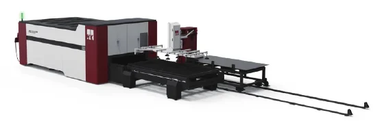
스마트 로더
소재를 자동 투입. 스윙 암식과 트랜스식이 있습니다. 대응 테이블 3015·4015·4020.

스마트 셀
소재 투입과 가공품 반출을 자동화. 최대 적재 3,000 kg.
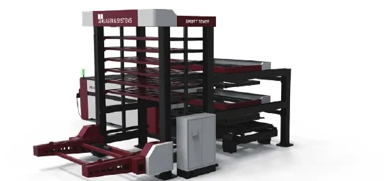
스마트 타워
투입·반출·보관을 일체화한 스토커. 선반 8단.

8단 자동화 타워
8단 타워와 가공기를 연결. 단당 최대 2 t. 배치는 요청에 맞춰 설계합니다.
옵션

스마트 노즐 체인저
노즐 12개를 수납하고 자동 교환. 정지 시간을 줄입니다.

빔 체커
빔 중심을 광학적으로 확인해 어긋남으로 인한 문제를 방지합니다.

스마트 볼 트랜스
소재 투입·반출을 쉽게 하고 흠집을 방지합니다. 판 두께 20 mm까지.

스마트 랙
주변 기기를 본체 상부에 배치해 설치 공간을 절약합니다.
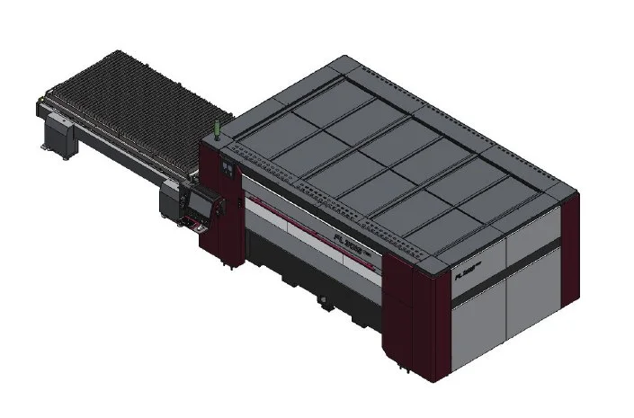
리버스 타입
도어·테이블·조작 위치를 좌우 반전한 레이아웃입니다.
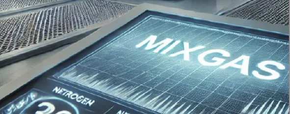
믹스 가스 절단
산소와 질소를 최적 비율로 혼합. 버를 줄이고 후공정을 줄입니다.
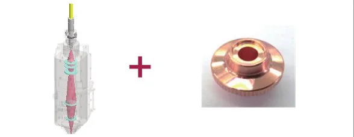
저압 질소 절단
줌 헤드와 전용 노즐로 7~8 bar 저압 질소 절단. 질소 비용을 줄입니다.

잉크젯 마킹
대응 내용은 문의해 주십시오.

현장에 맞춘 커스터마이즈
표준품으로 대응할 수 없는 크기와 사양도 상담해 주십시오.
대응 기종과 사양은 조합에 따라 다릅니다. 자세한 내용은 문의해 주십시오.
HK LASER & SYSTEMS
레이저 가공기 외길 메이커
1990년 설립 이래 2차원 레이저 가공기에 전념해 온 전문 메이커입니다. 전 세계 3,000대가 넘는 납품 실적이 있으며, 일본에서는 나고야에 거점을 두고 있습니다.
1990
설립
36
년간 레이저 가공기에 전념
3,000+
대 납품 실적(전 세계)
35
대/월 최대 생산 능력
비용과 품질을 잡는 HK의 기술
매일의 유지 비용과 후공정의 수고를 줄이는 독자 기술입니다.
믹스 가스 절단
질소와 산소를 최적 비율로 혼합. 6 mm를 넘는 연강을 버를 줄이면서 약 10% 빠르게 절단해 후공정을 줄입니다.
저압 질소 절단
독자 줌 헤드와 챔버 노즐로 7~8 bar 저압 질소 절단. 메이커 시험에서 질소 소비량을 약 60% 절감했습니다.
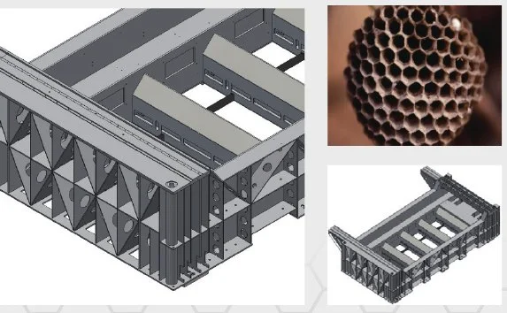
허니컴 구조 프레임
가벼움과 강성을 양립한 고강도 프레임. 변형을 억제해 고속 가공에서도 정밀도를 유지합니다.
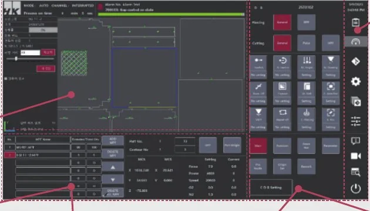
직관적인 조작 화면
터치 조작의 알기 쉬운 화면. 중단 후 재절단과 조건 설정도 간단하며 온라인으로 업데이트할 수 있습니다.

파이버 레이저의 에너지 절감
CO2 레이저(4 kW)에 비해 파이버(8 kW)는 소비 전력을 약 22% 줄이고, 박판에서는 최대 약 5배 속도로 절단합니다(메이커 비교값).
단계적으로 진행하는 자동화
스마트 로더, 스마트 셀, 스마트 타워, 8단 자동화 타워까지. 소재 투입부터 반출·보관까지 필요한 범위부터 자동화할 수 있습니다.
수치는 메이커가 공표한 시험·비교값입니다. 재질, 판 두께, 가공 조건에 따라 달라집니다.
3D BEVEL CUTTING
3D 베벨 커팅으로 개선 가공까지 1대로
헤드를 기울여 절단하는 3D 베벨 커팅에 대응합니다. 절단과 동시에 개선을 낼 수 있어 용접 전 기계 가공과 그라인더 작업을 줄일 수 있습니다.
- 베벨 각도 0~45° 대응
- 후판 개선 절단에도 대응(사진은 판 두께 50 mm 샘플)
- 대응 기종: FO Series(판재), TL9036-X(파이프)
가공 가능한 각도와 판 두께는 재질과 출력에 따라 다릅니다. 자세한 내용은 문의해 주십시오.
베벨 커팅 상담하기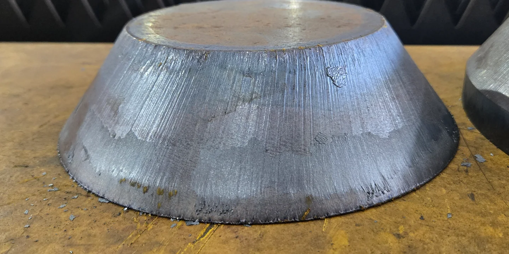

베벨 커팅 가공 샘플
기종 선택 방법
광섬유로 전송한 레이저 광을 가공 헤드에서 집광해 금속을 국소적으로 녹입니다. 노즐에서 나오는 어시스트 가스가 용융 금속을 배출하고, NC 제어로 도면의 윤곽을 따라 절단합니다. 판재용은 평면 위를 가공하고, 파이프 전용기는 척으로 관을 잡아 회전시키며 가공합니다.
| 가공·반송 조건 | 후보 기종 |
|---|---|
| 소형 판재, 정면에서 반입 | KUBE1212 |
| 판재, 수동 또는 2단 테이블 교환 | FL2512 |
| 측면 접근, 반입 동선에 맞춘 배치 | FL3015 |
| 정척판, 절단 속도와 테이블 사양 비교 | RS3015 / FS / HD / FC3015 |
| 절단 부품 자동 분류 | S-Matic K315 |
| 장척 강판 | FO |
| 원형관·각관, 지름과 1본당 질량으로 선정 | TL6527-S / TL9036-X |
견적에는 재질, 판 두께 또는 관의 단면 치수, 소재 길이, 월간 가공량을 적어 주십시오.
사양 포인트
- 판재 가공 크기 예
- KUBE1212는 1,240 × 1,240 mm, FL3015는 3,048 × 1,524 mm. FO 시리즈는 공칭 길이 12·20·30 m의 장척판에 대응합니다.
- 파이프의 지름·길이·질량
- TL6527-S는 원형관 Ø12–273 mm, 표준 길이 6.5 m, 최대 200 kg/본. TL9036-X는 Ø40–360 mm, 표준 길이 9 m, 최대 1,200 kg/본.
- 재질·출력·절단 판 두께
- 연강, 스테인리스강, 알루미늄은 절단할 수 있는 판 두께가 다릅니다. RS3015 6 kW 사양의 경우 기준값은 순서대로 최대 25, 17, 15 mm입니다.
- 가공 속도와 급속 이송
- FL3015의 최대 절단 속도는 55 m/min, 최대 합성 급속 이송은 140 m/min입니다. 실제 절단 속도는 재질, 판 두께, 형상, 가스 조건에 따라 달라집니다.
- 소재 교환과 자동화
- 전면 인출식, 측면 반입, 셔틀 테이블을 비교할 수 있습니다. S-Matic K315는 소재 투입부터 절단 후 부품 분류, 잔재 회수까지를 일체화합니다.
레이저 출력별 최대 절단 판 두께
| 레이저 출력 | 연강 | 스테인리스강 | 알루미늄 | 구리 | 황동 |
|---|---|---|---|---|---|
| 2.5 kW | 16 mm | 8 mm | 8 mm | 4 mm | 6 mm |
| 3 kW | 16 mm | 10 mm | 10 mm | 6 mm | 8 mm |
| 4 kW | 20 mm | 12 mm | 12 mm | 6 mm | 10 mm |
| 6 kW | 25 mm | 17 mm | 15 mm | 8 mm | 12 mm |
| 8 kW | 30 mm | 21 mm | 21 mm | 8 mm | 12 mm |
| 10 kW | 30 mm | 21 mm | 21 mm | 10 mm | 15 mm |
| 12 kW | 30 mm | 21 mm | 21 mm | 10 mm | 15 mm |
| 15 kW | 35 mm | 24 mm | 24 mm | 12 mm | 15 mm |
판 두께 단위는 mm입니다. 수치는 기준값이며, 재질, 표면 상태, 가스 품질과 가공 환경에 따라 절단 결과는 달라집니다.
절단 두께는 조건에 따라 다를 수 있습니다. 기종 선정 시에는 반드시 전문 담당자에게 문의해 주십시오. 문의는 여기로 ›
CAD/CAM
지금 쓰는 CAD/CAM과 연결해 사용
HK 레이저 가공기는 판금용 CAD/CAM "MetaCAM"에 대응합니다. 타사 소프트웨어로 만든 전개 데이터를 살리면서 절단 프로그램을 작성할 수 있습니다.
타사 벤더를 쓰는 공장에서도 MetaCAM을 통해 HK 가공기를 지금의 공정에 연결할 수 있습니다. 굽힘 공정은 그대로 두고 절단 공정만 증강·교체할 수 있습니다.
연계할 수 있는 데이터 범위는 소프트웨어 버전과 구성에 따라 다릅니다. 도입 전에 현재 환경을 알려 주십시오. 기재된 회사명·제품명은 각 사의 상표 또는 등록상표입니다.
연계 상담하기도입 후에도 멈추지 않게 하는 지원
메이커(HK)의 서비스 체제입니다. 일본에서의 대응 내용은 견적 시 안내해 드립니다.

원격 모니터링 HK INSIGHT
가동 상황과 이력을 PC나 스마트폰으로 실시간 확인할 수 있습니다. 메이커의 모니터링 팀도 함께 지켜봅니다.

리모트 서비스
24시간 365일 접수. 2023년에는 서비스 안건의 93% 이상을 원격 대응으로 해결했습니다(메이커 실적).

예방 정비와 오퍼레이터 교육
보증 기간 2년 동안 2회, 엔지니어가 방문해 점검합니다. 오퍼레이터를 위한 추가 교육도 실시합니다.